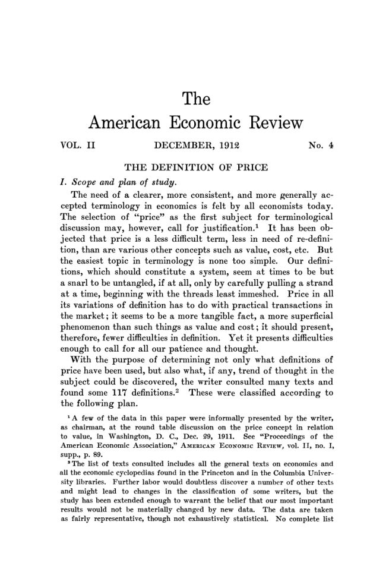

Fetter, 1912: o que é, afinal, um preço?
Leitura: 7 min
Fetter reúne 117 definições de preço, de Adam Smith a Taussig, mostra como Ricardo e Mill prenderam o termo ao dinheiro e propõe uma definição sem valor e sem moeda.


Frank A. Fetter, da Princeton University, foi às bibliotecas de Princeton e de Columbia e abriu todos os manuais gerais de economia e todas as enciclopédias econômicas que encontrou. Recolheu 117 definições de preço. Algumas ideias do trabalho já tinham sido apresentadas, informalmente, numa mesa-redonda sobre preço e valor que ele presidira em Washington, em 29 de dezembro de 1911.
A escolha do tema, diz Fetter, pede justificativa. O preço parece o conceito mais simples e mais palpável da economia, menos carente de redefinição que valor ou custo. Mas as definições formam um novelo, e é preciso puxar um fio de cada vez, começando pelos menos emaranhados.
Como se classificam 117 definições?
Fetter usa dois critérios. O primeiro é a noção de valor a que a definição se liga. No grupo A, o valor é poder de compra, valor de troca objetivo; no grupo B, é estima, valor subjetivo, no vocabulário austríaco; no grupo C, é uma simples razão de troca, uma expressão matemática. O segundo critério é o dinheiro. Nas definições monetárias, preço é necessariamente uma quantia de moeda; nas não monetárias, qualquer bem dado em troca pode ser o preço de outro. Os dois critérios combinados dão seis tipos.
Os exemplos vão de Adam Smith, que chamava o trabalho de primeiro preço, a Walker, para quem era igualmente correto dizer que um preço era de 75 alqueires de trigo ou de US$ 100. Entre os subjetivistas, Beccaria chamava o vinho de preço do trigo e vice-versa, e Menger definia os preços como as quantidades de bens que aparecem na troca.
Como o preço ficou preso ao dinheiro?
Antes de 1817, todas as definições da lista eram não monetárias. Ricardo deu o primeiro exemplo claro da variante monetária. Homem da City, numa Inglaterra em que a economia de escambo era substituída pela monetária, ele só conhecia preços em dinheiro, e viu no contraste entre poder de compra geral e sua expressão em moeda um novo critério de distinção.
Num ensaio de 1816, Ricardo escreveu que “o preço de uma mercadoria é seu valor de troca apenas em dinheiro”. (“The price of a commodity is its exchangeable value in money only.”)
Em 1848, J. S. Mill deu a esse uso o peso de sua autoridade. Os primeiros economistas, dizia, usavam valor e preço como sinônimos; para não desperdiçar dois bons termos com uma só ideia, preço seria o valor em relação ao dinheiro. Fetter sustenta que Mill não percebeu a distinção anterior a Smith e Ricardo, entre o valor como qualidade e o preço como a coisa dada em troca, e que por isso escolheu o caráter monetário como a única diferença possível.
A explicação, segundo Fetter, está numa mudança de vocabulário. Do fim do século XVIII em diante, a palavra valor perdeu nos escritos econômicos o sentido psicológico de estima e passou a significar poder de compra; ao mesmo tempo, sob a influência de Bentham, a palavra utilidade ocupou o lugar do valor de uso de Smith. Em alemão, onde Wert e Nutzen não se confundiam, a mudança foi incompleta.
O que mudou depois de 1871?
Com Menger e Jevons, em 1871, veio um novo impulso. A Menger se deve a maior parte das definições ligadas ao valor subjetivo entre 1871 e 1911; a Jevons, as definições de preço como razão de troca. Fetter critica o raciocínio de Jevons: dizer que o valor implica uma relação não é o mesmo que dizer que ele é uma relação. A altura e o peso implicam comparação com outros objetos, mas não são a comparação.
Os autores que seguiram Jevons nesse ponto, entre eles Davenport e Irving Fisher, são para Fetter um beco sem saída. Fisher define o preço como razão de troca e transfere a palavra valor para o produto da quantidade pelo preço, apelando ao uso dos homens de negócios. Fetter objeta que a distinção entre unidade e agregado é arbitrária, e que tirar de valor o sentido subjetivo tornaria incompreensível a discussão recente sobre o valor.
Que definição Fetter propõe?
Fetter observa que quase ninguém estudou o problema de forma sistemática: as definições foram escolhidas por acaso, por imitação ou por deferência à autoridade, e os que se afastaram do costume o fizeram, em geral, sem perceber. Ele mesmo admite que a pesquisa mudou a sua opinião, e que no exercício de um de seus manuais usara a expressão preço mínimo subjetivo, que agora critica nos outros.
A primeira proposta é definir o preço sem referência ao valor. Uma boa definição vai do conhecido ao desconhecido, e o valor é termo mais ambíguo que o preço. A definição não deve conter uma teoria do preço nem de sua relação com o valor; cada autor pode manter sua opinião sobre os componentes do preço, o problema de Smith, ou sobre seu vínculo com o valor, o problema austríaco, fora da definição. Fetter recusa também a ideia de preços pessoais ou subjetivos, que, a seu ver, nada mais são que avaliações individuais.
A segunda proposta é não limitar o preço ao dinheiro. O escambo não desapareceu, e o uso popular chama de preço quase tudo o que se dá em troca. O argumento de Davenport, de que sem a definição monetária faltaria um termo para a relação com o dinheiro, não procede: em qualquer caso é preciso dizer em que bem e em que unidade o preço está expresso, centavos por alqueire ou pence por jarda, e limitar a definição ao dinheiro não abrevia nada.
A definição final é: “preço é a quantidade de bens dada ou recebida em troca de outro bem”. (“Price is the quantity of goods given or received in exchange for another good.”)
Fetter diz que dificilmente se melhoraria a formulação de Menger, para quem os preços são as quantidades de bens que aparecem na troca, vistas como pagamento pelos bens contra os quais se trocam. E admite que o momento de um acordo internacional sobre a definição talvez ainda não tenha chegado.
Na minha leitura
Na minha leitura, o artigo vale menos pela definição a que chega do que pelo método. Fetter trata a terminologia como um problema empírico: conta, classifica e data as definições, e mostra que o significado de uma palavra técnica mudou com as teorias e com o ambiente econômico, como a passagem do escambo à economia monetária na Inglaterra de Ricardo. Uma definição, nesse quadro, não é neutra; carrega uma teoria do valor sem dizer.
A recomendação de separar a definição da teoria é útil para qualquer campo. Quando um conceito traz embutida a explicação do fenômeno que nomeia, o debate fica circular, porque discordar da teoria parece discordar da palavra. Fetter propõe o caminho inverso: um conceito concreto e observável, a quantidade de bens dada na troca, sobre o qual as escolas possam divergir na explicação.
Glossário
- Valor de troca objetivo
- poder de compra de um bem sobre outros bens.
- Valor subjetivo
- estima que uma pessoa atribui a um bem.
- Razão de troca
- proporção matemática em que dois bens se trocam.
- Definição monetária
- aquela em que o preço é necessariamente uma quantia de dinheiro.
- Escambo
- troca direta de bens sem uso de moeda.
- Valor de uso
- expressão de Adam Smith para a utilidade de um bem, distinta do seu valor de troca.
Fontes
- The Definition of Price — Frank A. Fetter (Princeton University) (pp. 783–813). JSTOR · Internet Archive (PDF)
- Edição completa, com os demais artigos: Nº 121 do Arquivo.
Documento em domínio público (EUA, publicado antes de 1931), via JSTOR Early Journal Content e Internet Archive. Resumo e comentário do autor deste site, sem afiliação com a American Economic Association. Encontrou um erro? Escreva: a correção é publicada no próprio texto, com data.
↑ Nº 121 · Dezembro de 1912: o que é preço, de onde vêm os juros Seager, 1912: os juros nascem só da impaciência? →